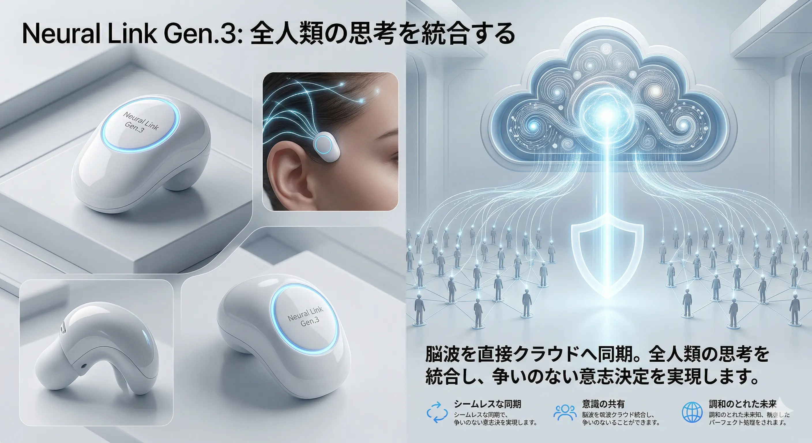
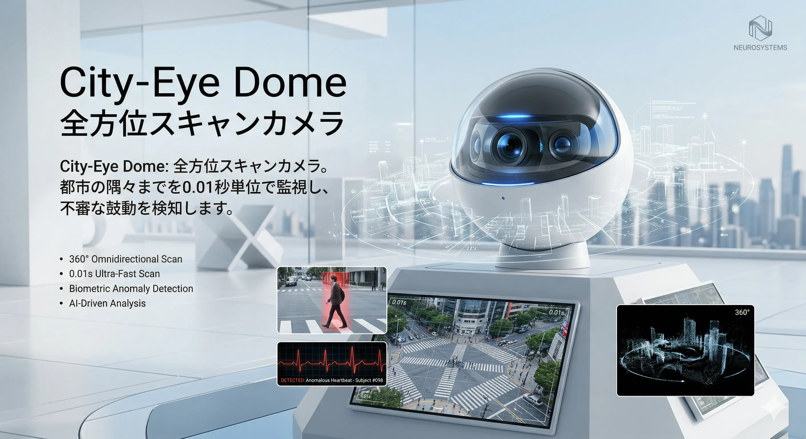
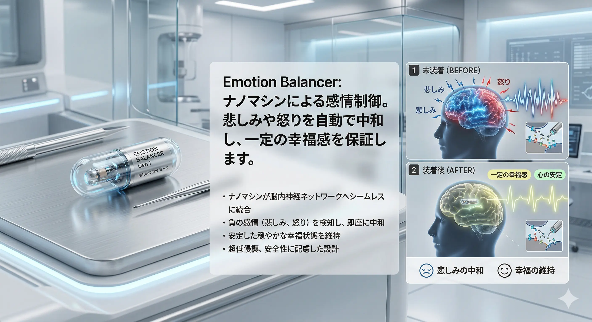
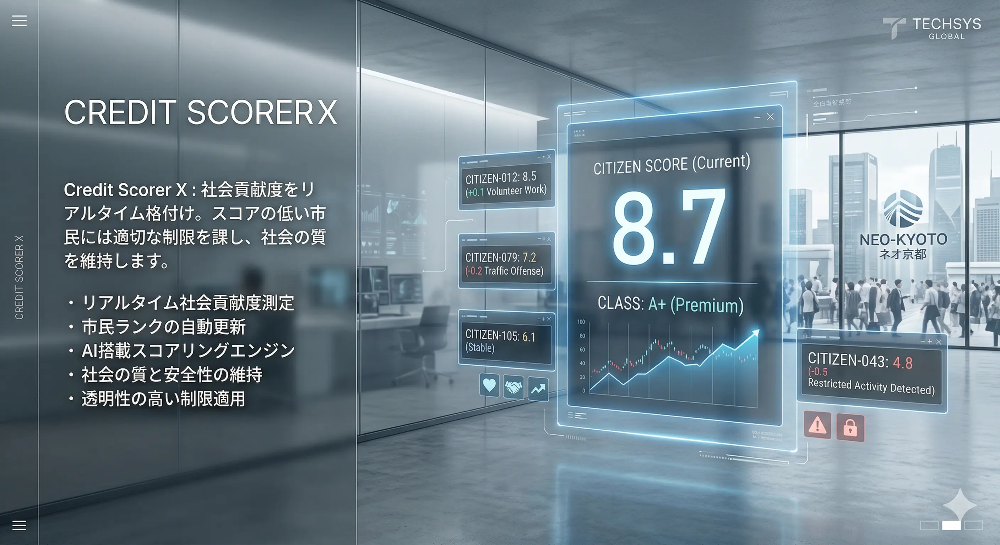
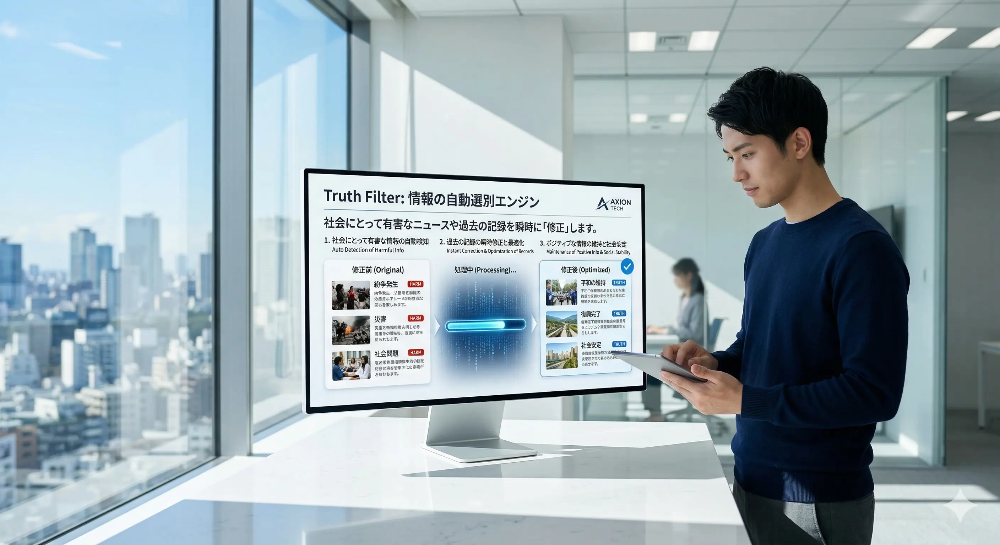
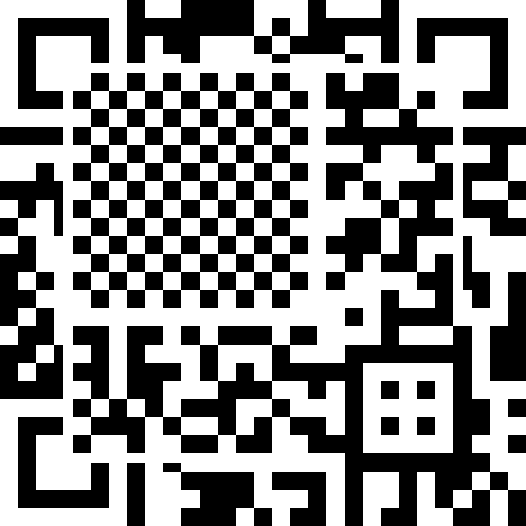

PRODUCTS
自由を、再定義する。

01
Neural Link Gen.3
脳波を直接クラウドへ同期。全人類の思考を統合し、争いのない意志決定を実現します。

02
City-Eye Dome
全方位スキャンカメラ。都市の隅々までを0.01秒単位で監視し、不審な鼓動を検知します。

03
Emotion Balancer
ナノマシンによる感情制御。悲しみや怒りを自動で中和し、一定の幸福感を保証します。

04
Credit Scorer X
社会貢献度をリアルタイム格付け。スコアの低い市民には適切な制限を課し、社会の質を維持します。

05
Truth Filter
情報の自動選別エンジン。社会にとって有害なニュースや過去の記録を瞬時に「修正」します。
06
Bio-Lock ID
遺伝子レベルの個人認証。逃亡や偽装を不可能にし、完全なトレーサビリティを確立します。
